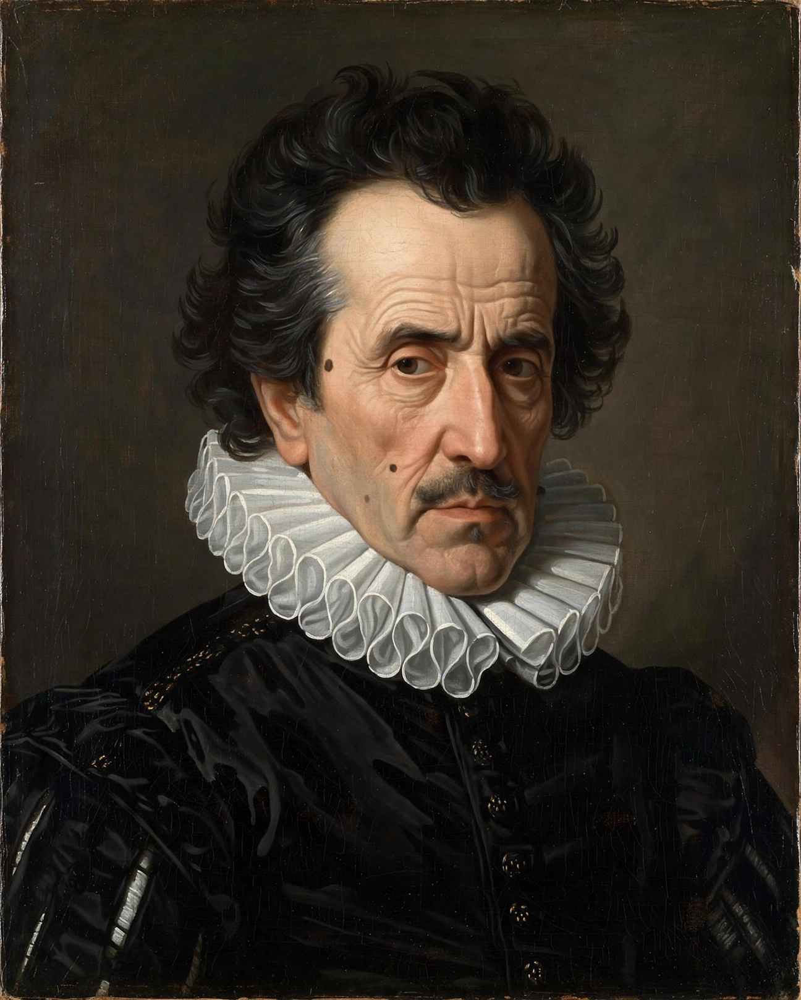

| Born | 11 July 1561, Córdoba, Spain |
|---|---|
| Died | 24 May 1627 (aged 65), Córdoba |
| Occupation | Poet, priest |
| Movement | Culteranismo, Spanish Golden Age, Baroque |
Luis de Góngora y Argote (11 July 1561 – 24 May 1627) was a Spanish Baroque lyric poet and Catholic priest. Góngora and his lifelong rival, Francisco de Quevedo, are widely considered the most prominent Spanish poets of all time.
His style, known as culteranismo — called Gongorism by detractors — is marked by Latinate syntax, hyperbaton, dense classical allusion, neologisms and elaborate metaphor. It stood opposite Quevedo's conceptismo.
His major long poems are the Fábula de Polifemo y Galatea (1612) and the unfinished Soledades (1613), which scandalised contemporaries with their difficulty. He also wrote many sonnets, romances and letrillas, both lofty and satirical. Ordained in 1617 and chaplain to Philip III, he died in Córdoba in 1627. The Generation of 1927 in Spain revived his reputation on the tercentenary of his death.